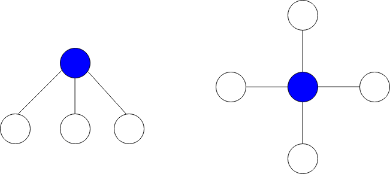
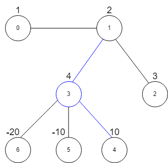

| Category | Difficulty | Likes | Dislikes |
|---|---|---|---|
| Algorithms | Medium | 446 | 60 |
array | greedy | graph | sorting | heap-priority-queue
google | akuna-capital | amazon
There is an undirected graph consisting of n nodes numbered from 0 to n - 1. You are given a 0-indexed integer array vals of length n where vals[i] denotes the value of the ith node.
You are also given a 2D integer array edges where edges[i] = [ai, bi] denotes that there exists an undirected edge connecting nodes ai and bi.
A star graph is a subgraph of the given graph having a center node containing 0 or more neighbors. In other words, it is a subset of edges of the given graph such that there exists a common node for all edges.
The image below shows star graphs with 3 and 4 neighbors respectively, centered at the blue node.

The star sum is the sum of the values of all the nodes present in the star graph.
Given an integer k, return the maximum star sum of a star graph containing at most k edges.
Example 1:

Input: vals = [1,2,3,4,10,-10,-20], edges = [[0,1],[1,2],[1,3],[3,4],[3,5],[3,6]], k = 2
Output: 16
Explanation: The above diagram represents the input graph.
The star graph with the maximum star sum is denoted by blue. It is centered at 3 and includes its neighbors 1 and 4.
It can be shown it is not possible to get a star graph with a sum greater than 16.Example 2:
Input: vals = [-5], edges = [], k = 0
Output: -5
Explanation: There is only one possible star graph, which is node 0 itself.
Hence, we return -5.
Constraints:
n == vals.length1 <= n <= 105-104 <= vals[i] <= 1040 <= edges.length <= min(n * (n - 1) / 2, 105)edges[i].length == 20 <= ai, bi <= n - 1ai != bi0 <= k <= n - 1